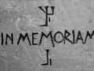

The ICPA is a private association created by friends and colleagues of journalist Jack Lorski in the wake of his murder in Scotland. The ICPA is aimed at helping international police and law departments to bring a swift end to the Phoenix's killing spree.
SKL NETWORK is the agency that Jack Lorski worked for. It decided to go public with the two CD-ROMs received from the Phoenix.
LIBERATION.FR has published several articles on the Phoenix case. Use its search engine to access its archives.
LATEST NEWS
09-23-2006 NEWS TO BE TRANSFERRED
From now on, the ICPA will regularly publish the latest news concerning the investigation on the
phoenix-investigators.org website. We would advise you to register with the site as soon as you
start deciphering the DVD-ROM.
Read the previous news items
CALL FOR WITNESSES
Since 2001, the "Phoenix" has committed over a dozen murders throughout Europe. The main characteristic linking the murders is the way in which they have been cruelly and sordidly staged, and the recurring theme is esotericism (Photo 1), hermetism, alchemy, astrology, kabala, and so on.
After lying low for so long, it would appear that several new murders bear all the hallmarks of the Phoenix, including the death of our colleague and friend Jack Lorski (Photo 2).

The International Committee for the Phoenix's Arrest (ICPA) is determined to use all the latest investigation and communication techniques to track down the murderer. It has opened a website, so that you can take part in the investigation.
If you happened to encounter Jack Lorski in Scotland in early July 2006 in the Loch Fyne area (Photo 3), or if any of your family, friends, colleagues, neighbors, etc. have recently disappeared and might be connected to the Phoenix case, please contact the ICPA as soon as possible at the following address: